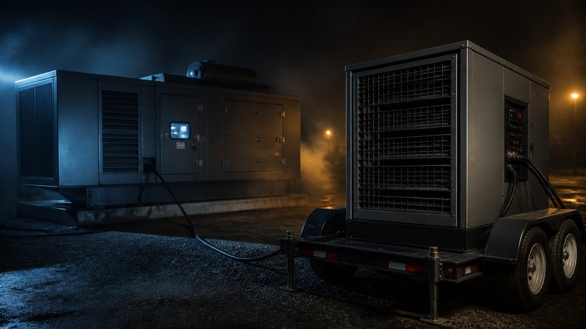
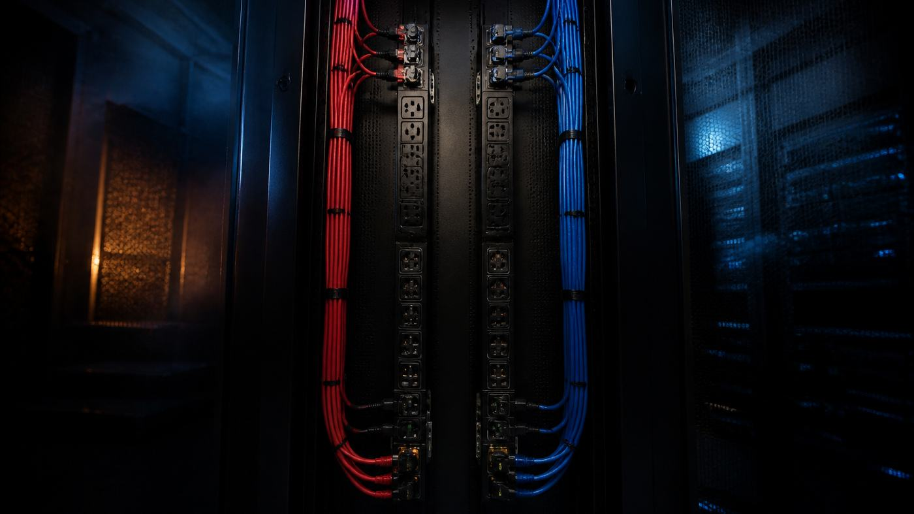
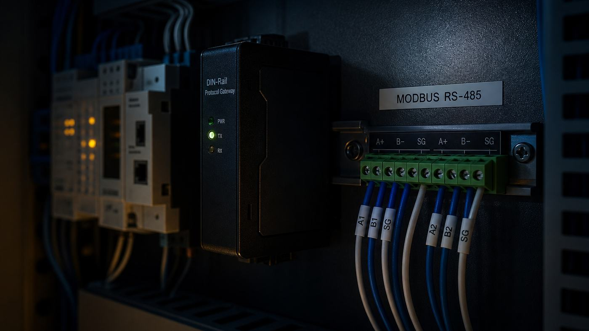
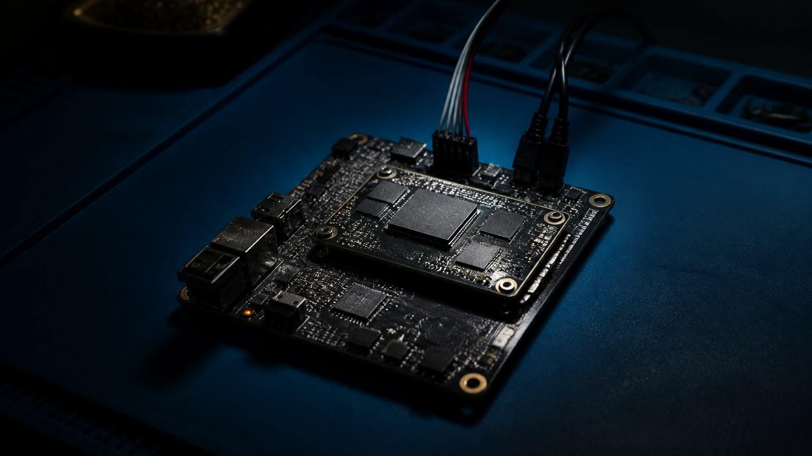
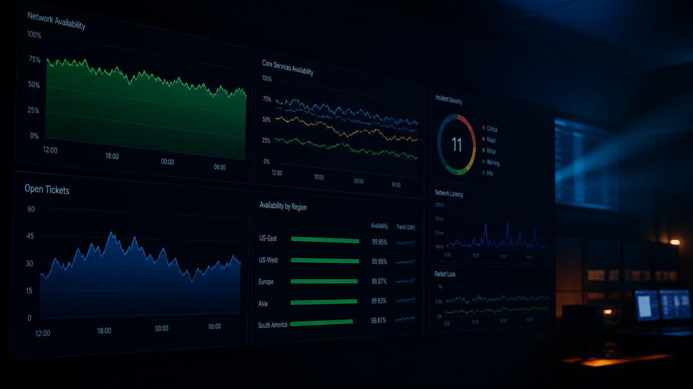

// Writing
Notes from the plant
Infrastructure, mostly. Power chains, fiber, networks and the systems on top of them — written down while I still remember why.
Aisle containment and the air you are already wasting
Bypass and recirculation are the real problem, containment is one answer, and delta-T is how you tell whether any of it worked.
9 min read
Building a maintenance calendar that does not collide with itself
Load banks, generator runs, battery testing, thermography and breaker injection — what each proves, what it costs you in redundancy, and how to sequence it.
9 min readChoosing a data center cooling architecture
CRAC versus CRAH, DX versus chilled water, air-cooled versus water-cooled, and what economizers and liquid cooling actually change.
8 min readGetting a large load interconnected to the utility
What a utility needs from you, how the study process works, who pays for the substation, and why interconnection is the real project schedule.
8 min readWhat N+1 actually buys you
Decoding N, N+1, 2N and 2N+1, the difference between capacity and paths, and the failures that survive all of them.
8 min readWhat PUE tells you and what it hides
How power usage effectiveness is defined and metered, the ways a good number covers for a badly run facility, and what to measure instead.
8 min read
What Uptime Institute Tiers actually say
The four Tier definitions, the three Certification awards, and why a Tier claim in a sales deck is usually not one.
8 min read
What actually decides a data center site
How power capacity, fiber routes, water, land and local politics narrow a long list of parcels down to the one or two that will work.
8 min read
What each level of data center commissioning actually proves
What happens at each of the five commissioning levels, who writes the test scripts, and why operations must witness the integrated systems test.
8 min read
Choosing and living with a UPS battery plant
Flooded, VRLA and lithium compared on runtime, footprint and failure mode, what NFPA 855 asks of a lithium install, and where flywheels fit.
8 min readCommercial power from 480 volts down to the receptacle
How three-phase distribution works in a commercial building, why the neutral can carry more current than a phase, and what harmonics cost you.
7 min readGrounding and bonding are not the same thing
What each one actually does in a data center, why isolated ground receptacles start arguments, and whether signal reference grids still earn their cost.
8 min read
Reading an arc flash label and knowing what is behind it
What an incident energy calculation computes, how the two NFPA 70E methods differ, why studies go stale, and how to cut energy rather than exposure.
8 min read
Sizing and metering rack power
How to size a rack circuit under the continuous load rules, how A/B redundancy gets defeated in practice, and what stranded capacity costs.
8 min readSizing standby diesel for a data center load
Why transient response and not steady-state kilowatts decides generator size, what UPS rectifiers do to an alternator, and how derating and fuel bite you later.
8 min read
UPS topologies and what N+1 really means
The four UPS topologies, the honest case for and against eco mode, and why module-level redundancy is not the same as a redundant system.
8 min readWhat actually happens when a transfer switch transfers
Open, closed and soft transition explained, why the utility gets a say in closed transition, and why bypass isolation decides whether the switch ever gets inspected.
7 min readWhy the wrong breaker trips first
How overcurrent devices are made to open in the right order, how to read a time-current curve, and where the Code actually requires it.
8 min readBGP once you have your own AS number
What BGP is doing, how it picks a path, what communities and prepending buy you, and what a full table costs in memory.
8 min read
Choosing between single-mode and multimode fiber
The core diameter sets the physics, the transceiver sets the price, and the price is usually what decides it.
6 min readDDoS mitigation starts upstream of your firewall
The three attack classes, why amplification works, what blackholing and flowspec actually do, and how to choose between appliances and scrubbing.
8 min read
Fiber loss budgets and the connector nobody cleaned
How to build an optical link budget out of real numbers, and why every end face gets inspected before it gets mated.
8 min read
Getting your own IP space and AS number from ARIN
What provider-independent space costs, how to justify it, why IPv4 is now a market, and how to size IPv6 so you never do this twice.
8 min readHow DWDM turns one fiber pair into dozens of circuits
Why you multiplex wavelengths, how the ITU grid works, what transponders and amplifiers do, and what a metro ring is really made of.
8 min readStructured cabling that survives ten years
The standards, pathways, bend radii, labeling and test discipline that decide whether your cable plant ages well or becomes a hazard.
8 min readWhat a dark fiber IRU actually buys you
An IRU is not a lease and not a circuit. What you get, what you keep paying for, and what to check before signing.
7 min readWhen peering starts to make more sense than transit
What you actually pay for with transit, how settlement-free peering works, and the arithmetic that tells you when to connect to an exchange.
7 min readBuilding your own kernel, and the bill that comes with it
What a custom Linux kernel actually buys you, how to manage the config, and the ongoing maintenance you are agreeing to.
8 min read
Monitoring the equipment that keeps the building alive
The protocols facilities gear actually speaks, how to get it into one system, and how to build alerting people will still read in a year.
9 min readNetwork booting a fleet without touching it
How PXE, iPXE, UEFI and out-of-band control fit together, and what it takes to make an install repeatable across thousands of machines.
8 min read
SNMP and what monitoring actually costs you
How SNMP works, why community strings refuse to die, and the running cost of a monitoring system nobody puts in the budget.
9 min readXen, KVM, and the hardware underneath them
What a hypervisor does to a CPU, why x86 needed hardware help, and how Xen and KVM take different routes to the same place.
8 min readHow CAN survives an engine bay
The physical layer, arbitration, bit timing and error handling that let a two-wire bus work next to an alternator, plus the protocols layered on top.
8 min read
Picking between Yocto, Buildroot and Debian for a product
How the three common embedded Linux build approaches differ on reproducibility, build time, licensing evidence and long-term maintenance.
8 min read
Shipping OTA updates you can't take back
A/B partitions, delta updates, rollback that actually works, signing, staged rollouts, and the device that has been offline for a year.
8 min read
Compliance for hosting and colocation providers
What SOC 2 covers, how PCI DSS responsibility splits in a shared facility, when a BAA applies, and how to survive an audit.
8 min readA hundred small fixes beat one reorganization
Why continual improvement outperforms big-bang change in operations, how to make it somebody's actual job, and the way the practice usually dies.
6 min read
Customer service is a deliverable, not an overhead
What an uptime SLA actually promises, why the credit matters less than the conversation, measuring satisfaction without gaming it, and staffing support as you grow.
7 min readEarning each stage of a new product
Crawl, walk, run as an actual sequence — what a crawl looks like, why teams skip it, and how to tell a walking product from one being carried.
6 min readHow we know what the universe is
An atheist's account of why finite time is worth more, the measured age and scale of the universe, and how those numbers were produced.
8 min read
If I don't do it, nobody else will
The ownership stance that is correct at seven people, the point where it becomes the bottleneck, and how to tell you have crossed it.
7 min readTelling imposter syndrome apart from an actual skill gap
Why the feeling targets people who keep changing domains, how to distinguish it from a real gap, and what reduces it besides reassurance.
7 min readWhat customers want is not what they ask for
Where demand signal actually lives in a hosting business, how to separate a loud minority from a real pattern, and what a request-driven roadmap turns into.
6 min read
What it actually takes to promote on merit
Why advancement on demonstrated capability beats tenure or proximity, what a merit system requires to function, and how it gets quietly captured.
7 min read